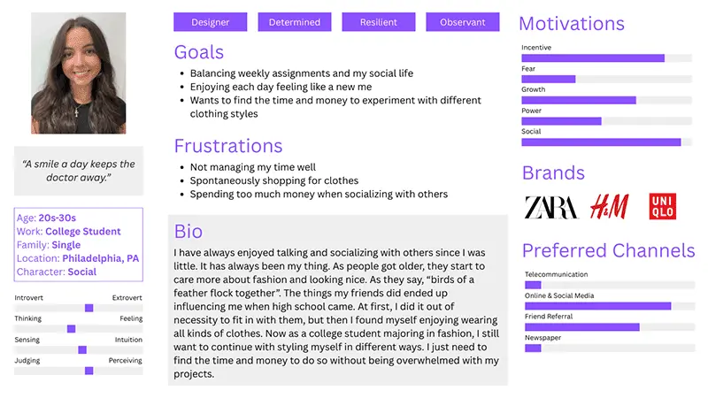
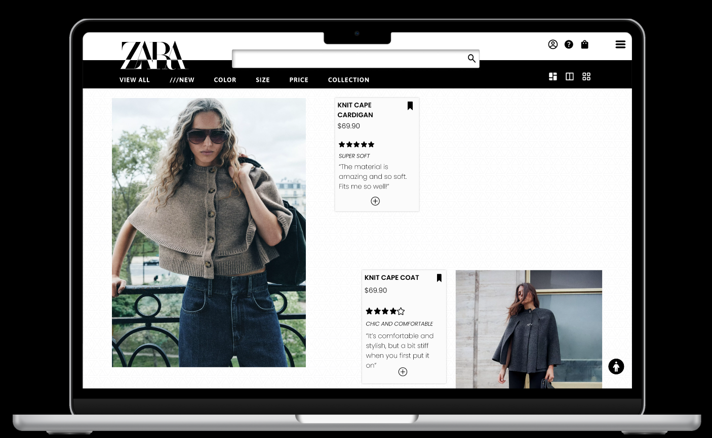
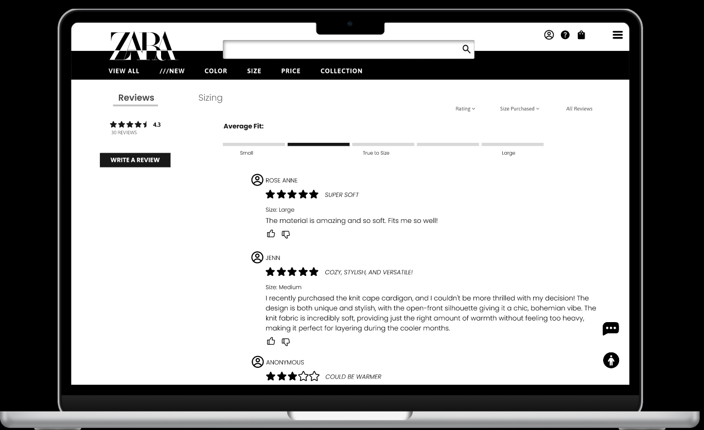

- PROJECT MANAGEMENT
- DEVELOPMENT
- PHP
- MYSQL
- MICROINTERACTIONS
This project focused on improving the ordering experience for KC's Fresh Fruit and Smoothies, a popular food truck serving students around Drexel University. Despite its strong reputation, the stand operated on a cash-only, in-person system that often led to long wait times during peak hours. Over the course of three months, our team, 4 Corners, designed and developed a mobile app that allows students to order ahead through a simple, intuitive interface, reducing time spent waiting while maintaining the quick, casual nature of the food truck experience.
My Role
I served as the primary project manager and secondary developer throughout the project.
As project manager, I was responsible for tracking task completion, organizing meetings, and ensuring we stayed on track across the three-month timeline. I kept the project aligned with our core goal of simplifying the ordering experience.
As a secondary developer, I contributed to building the app, supporting implementation decisions, and helping translate our design ideas into a functional product.
Context & Challenge
KC's Fresh Fruit and Smoothies operates in a fast-paced campus environment where high demand and a cash-only, in-person system create friction for both customers and the vendor, especially during peak hours. As a team of four, we worked over three months to address this challenge by focusing on how to reduce wait times without disrupting KC’s existing workflow. The core problem was the lack of an efficient ordering system, making it difficult for students to quickly grab food between classes and for KC to manage large volumes of orders. Our goal was to design a solution that streamlined the process through quick, intuitive ordering and clear pickup identification, with success measured by how seamlessly it fit into real-world use while improving speed and overall experience.

Research
My goal in this research was to understand the pain points through user persona, how people group elements together through card sorting/sitemapping, and additional feedback from testers that want to be incorporated.
Initial Goals:
- Create a way to inform the pricing of something to the user without the need to go to a different page
- Shrink the images to fit the screen so that it won't overwhelm the user
The card sort exercise conducted showed that testers would like to see the reviews of the products and additional items in the navigation to enhance the site.
Design & Prototyping
Focusing on users' pain points and simplifying their experience, I created prototypes that include their requests of having visible pricing and a snippet review section that can give users a quick glance on what it offers.
To fit more with Zara's image of being avant garde and also reducing stress for the users' eyes, I changed their layout design to fit more in the style of the parallax grid system.
There is also a reviews section added into the product details page to allow users to see more of what others have to say.
Zara's checkout process was shrunken to one page compared to their original design that had multiple pages, creating more work than necessary for the user.


Results & Outcomes
Conclusion/Modified Goals:
- Changed the layout in a way that fits more with Zara's image of being avant garde through using a parallax grid system
- Created a way to inform the pricing of the item in the same page
- Shrunk images to fit the screen so that it won't overwhelm the user
- Added a reviews section for users to see quickly as they are scrolling
- Deleted some sections in the homepage that was unnecessary and added prices for some items there